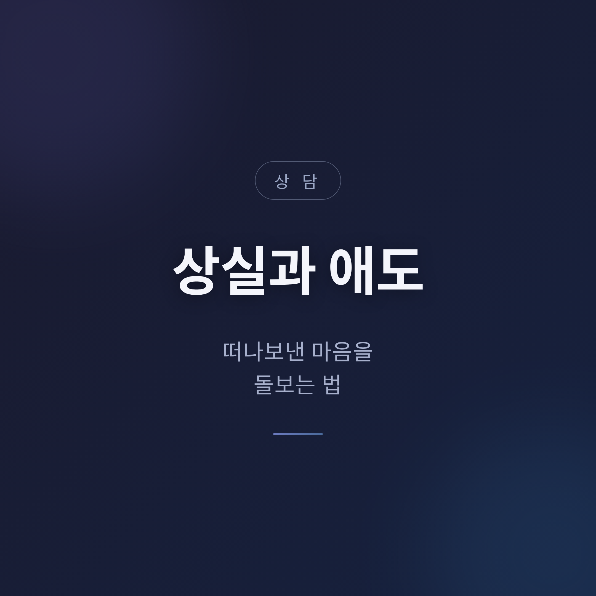
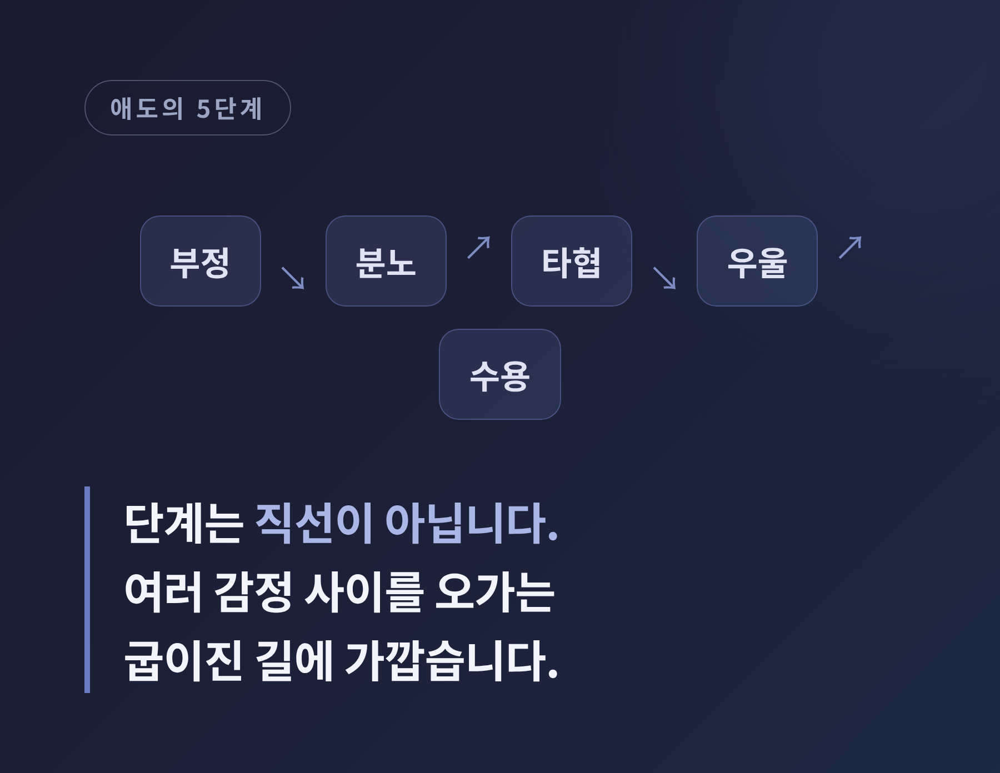
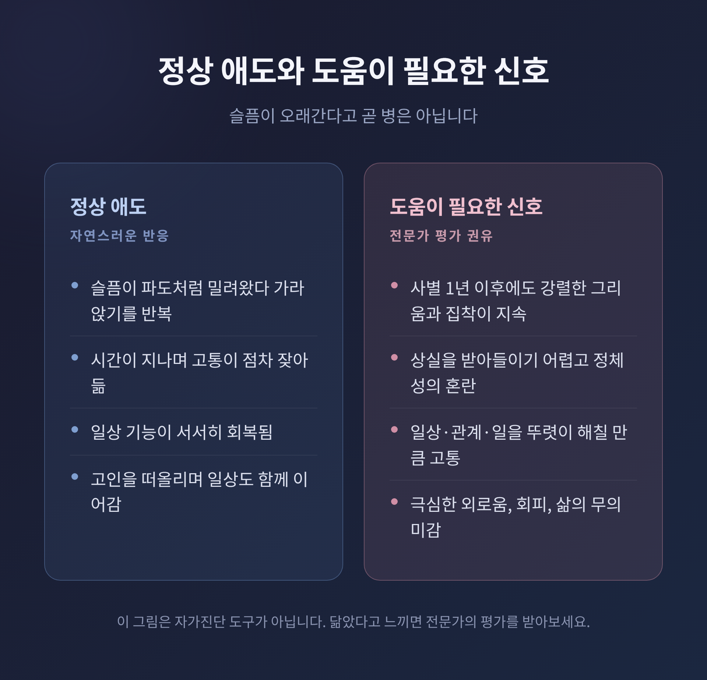

상실과 애도, 떠나보낸 마음을 돌보는 법
사랑하는 사람을 떠나보낸 뒤의 마음은 한 가지 모습이 아닙니다. 이 글에서는 애도가 무엇인지, 무엇이 자연스러운 반응인지, 그리고 지치지 않게 그 시간을 견디는 법을 정리해 보겠습니다. 전문가의 도움이 필요한 신호와 도움받을 곳도 함께 담았습니다.

애도는 병이 아니라 자연스러운 반응입니다
먼저 말이 헷갈리기 쉬운 부분부터 짚겠습니다.
사별은 가까운 사람의 죽음 같은 상실을 겪은 '상황'을 가리킵니다. 슬픔(비애)은 그 상실에 대한 마음과 몸의 반응 전체를 말합니다. 그리움, 혼란, 과거를 자꾸 되새기는 마음, 앞날에 대한 불안이 모두 여기에 들어갑니다. 애도는 그 상실을 받아들이며 고인 없는 삶을 새롭게 꾸려 가는 '과정'에 가깝습니다.
한국의 공공 자료에서도 애도는 사랑하는 이의 죽음뿐 아니라 모든 의미 있는 상실에 대한 '정상적인 반응'으로 설명합니다.
중요한 것은 반응의 모습이 사람마다 다르다는 점입니다. 모든 사별이 똑같이 강한 슬픔으로 이어지지도 않고, 모든 슬픔이 겉으로 드러나지도 않습니다.
그러니 "이렇게 슬퍼하는 게 맞나" 하는 의심은 잠시 내려놓아도 좋겠습니다. 애도에는 정해진 일정표가 없습니다.
'5단계'라는 말, 어디까지 믿어야 할까
부정, 분노, 타협, 우울, 수용. 이른바 애도의 5단계는 매우 널리 알려져 있습니다.
이 모델은 정신과 의사 엘리자베스 퀴블러-로스가 죽음을 앞둔 환자들을 관찰하며 정리한 것입니다. 이후 사별한 유족의 마음을 설명하는 데까지 폭넓게 쓰이게 되었습니다.
다만 오해도 함께 퍼졌습니다.
흔한 오해 하나는 다섯 단계를 순서대로 거친다는 생각입니다. 정작 퀴블러-로스 본인은 환자 대부분이 두세 단계를 동시에 보였고 늘 같은 순서로 나타나지도 않았다고 밝혔습니다. 어떤 단계도 겪지 않는 사람도 있습니다.
또 하나는 누구나 이 단계를 '거쳐야 한다'고 받아들이는 것입니다. 본래는 관찰을 정리한 설명이었으나, 대중에게는 체크리스트처럼 굳어졌습니다. 그 탓에 이 틀에 맞지 않는 사람이 "나는 제대로 슬퍼하지 못한다"는 부담을 느끼곤 합니다.
학계에서는 이 이론이 경험적으로 충분히 입증되지는 않았다고 봅니다. 죽음을 받아들이기 위해 반드시 거쳐야 하는 정해진 감정의 순서는 없다는 것입니다.

그래서 요즘은 5단계를 직선도, 보편 법칙도 아닌 감정의 참조점 정도로 봅니다. 감정에 이름을 붙이는 데는 도움이 되지만, 다음에 무엇이 올지 알려 주는 도구는 아닙니다.
이와 달리 애도를 '거쳐야 할 단계'가 아니라 '해 나갈 과제'로 보는 관점도 있습니다. 상실의 현실을 받아들이고, 슬픔의 고통을 통과하며, 고인 없는 환경에 적응하고, 고인과의 관계를 새로 자리매김하며 삶을 이어가는 것입니다.
또 다른 시각으로 이중 과정 모델이 있습니다. 슬픔을 직면하는 '상실 지향'과 일상을 재건하는 '회복 지향' 사이를 오가는 것이 건강한 애도라는 설명입니다. 둘을 왔다 갔다 하는 흔들림 자체가 자연스럽습니다. 일상을 추스른다고 해서 고인을 잊는 것은 아닙니다.
몸과 마음에 찾아오는 것들
상실 초기에는 멍하고 무감각하다고 느끼는 경우가 많습니다. 그 마비감이 옅어지면서 오히려 더 강한 상실감이 밀려오기도 합니다.
슬픔은 파도처럼 옵니다. 안절부절못함, 불안, 분노 같은 고통이 몇 주에서 몇 달에 걸쳐 밀려왔다 가라앉기를 되풀이합니다. 시간이 지나며 이 과정은 점차 잦아듭니다.
몸도 함께 반응합니다. 속이 불편하고, 입맛이 떨어지고, 가슴이 답답하거나 잠을 설치기도 합니다. 쉽게 지치고 집중이 어려워지며, 두통이나 잔병에 더 약해지기도 합니다.
이런 반응은 대부분 상실에 대한 자연스러운 결과입니다.
다만 안전을 위해 한 가지는 분명히 해 두겠습니다. 가슴 통증이나 호흡 곤란이 심하다면 '애도 반응'으로만 넘기지 마시기 바랍니다. 강한 정서적 충격 직후 일시적으로 심장 기능이 떨어질 수 있다는 점이 알려져 있습니다. 증상이 심하면 의학적 평가를 받으시길 권합니다.
정상 애도와, 도움이 필요한 신호의 구분
"슬픔이 오래간다"는 것 자체가 곧 병은 아닙니다. 이 점을 먼저 분명히 하겠습니다.
다만 의료 현장에서는 정상적인 애도와, 오래 지속되며 일상을 무너뜨리는 비애를 구분합니다. 후자를 지속비애장애라 부릅니다.
진단의 기준 하나는 시간입니다. 사별이 최소 12개월 이전에 일어났어야 고려 대상이 됩니다(아동·청소년은 더 짧은 기준을 적용합니다). 사별 후 1년이 지나도 급성기 수준의 비애가 여전히 고통스럽고 일상 기능을 해칠 때를 말합니다.
핵심 양상은 고인에 대한 강렬한 그리움, 그리고 고인 생각에 사로잡히는 집착입니다. 여기에 정체성의 혼란, 상실을 받아들이기 어려움, 상실을 떠올리게 하는 것에 대한 회피, 극심한 외로움이 동반되기도 합니다.
다만 이 글은 자가진단 도구가 아닙니다. 위 내용이 자신과 닮았다고 느끼신다면, 스스로 판정하기보다 전문가의 평가를 받아 보시길 권합니다.

지치지 않게 견디는 법
"이렇게 하면 빨리 낫는다"는 말씀은 드리지 않겠습니다. 옳고 그른 애도 방식은 없습니다. 대신 자신을 조금 덜 지치게 하는 작은 방법들을 적어 봅니다.
- 한 번에 다 해내려 하지 말고, 쉽게 이룰 수 있는 작은 목표를 세웁니다.
- 입맛이 없더라도 간단하고 건강한 간식이라도 챙깁니다.
- 잠이 오지 않으면 평소 도움이 되던 방법을 시도해 봅니다.
- 하루 30분이라도 좋아하는 일에 자신을 위한 시간을 내어 봅니다.
피해야 할 것도 있습니다. 슬픔을 달래려 술·담배·약물·도박에 기대는 것은 마음을 더 무너뜨릴 수 있습니다.
감정은 혼자 삼키지 않아도 됩니다. 친구나 가족, 의료진이나 상담사에게 마음을 이야기해 보시길 권합니다. 고인을 기억하는 나름의 방식, 이를테면 편지나 기일의 작은 의식으로 이어가는 유대도 건강한 적응의 한 부분입니다.
예전엔 슬픔을 빨리 지워야 한다고들 여겼습니다. 지금은 슬픔과 일상 사이를 오가며 함께 살아가는 법을 더 중요하게 봅니다.
곁에 있는 사람을 위한 안내
누군가의 상실 곁에 있을 때, 우리는 자주 무슨 말을 해야 할지 몰라 망설입니다.
긴 말은 필요하지 않습니다. "많이 힘들겠다", "곁에 있을게" 정도면 충분합니다. "무슨 말을 해야 할지 모르겠지만 함께 있을게"라고 솔직히 말해도 좋습니다. 메시지 끝에 "답장 안 해도 돼"를 덧붙이면 상대의 부담을 덜어 줍니다.
반대로 피할 말도 있습니다. 상대의 상실을 내 경험과 비교하지 않습니다. "시간이 약이다", "다 이유가 있어서 그런 거다" 같은 말은 공허하게 들리기 쉽습니다.
대부분의 유족은 떠난 사람을 이야기하고 떠올리고 싶어 합니다. 그렇게 하도록 들어 주는 것이 도움이 됩니다.
카드 한 장, 식사 한 끼, 정기적인 안부. 작은 행동을 한 번으로 끝내지 않고 꾸준히 이어가는 것이 위로가 됩니다. 슬픔을 없애 주려 애쓰기보다, 곁에 함께 있어 주시면 좋겠습니다.
이럴 때는 전문가를 찾으세요
다음과 같은 신호가 보인다면 혼자 견디지 마시기 바랍니다.
- 사별 후 1년 이상 지나도 강렬한 그리움과 집착이 거의 매일 이어지고, 일상·관계·일을 뚜렷이 해칠 때.
- 상실을 전혀 받아들이지 못하거나, 삶이 무의미하게 느껴지고 극심한 외로움이 지속될 때.
- 술·담배·약물·도박에 대한 의존이 심해질 때.
특히 죽고 싶은 생각이나 자해·자살에 대한 생각이 들거나, 식사·위생을 돌보지 못할 만큼 자신을 방치하게 된다면 즉시 도움을 요청해야 합니다.
한국에서 도움받을 수 있는 곳을 적어 둡니다.
- 정신건강상담전화 1577-0199 (24시간 상담·지지·기관 안내)
- 자살예방상담전화 109
- 보건복지부 정신건강 심리상담 바우처사업
- 전국 정신건강복지센터, 국가트라우마센터
※ 번호와 운영 시간은 이용 시점에 한 번 더 확인하시길 권합니다.
이 글은 일반적인 정보 제공을 목적으로 하며, 전문적인 의학적·심리적 진단이나 상담을 대체하지 않습니다. 애도 반응은 사람마다 다르며, 위 내용은 진단 도구가 아닙니다. 혼자 견디기 어렵거나 위와 같은 신호가 보인다면 정신건강 전문가나 가까운 상담기관의 도움을 받으시길 권합니다.
끝으로 한 마디만 더 드리겠습니다.
애도에는 정답도, 끝나는 날짜도 적혀 있지 않습니다. 그러니 — 슬픔을 빨리 지우는 것이 아니라, 그 마음과 함께 살아가는 법을 천천히 익히면 됩니다.
당신의 슬픔이 잘못된 것이냐고 물으신다면, 그렇지 않다고 답하겠습니다. 그것은 사랑했다는 증거이기 때문입니다.